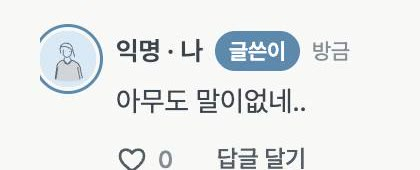
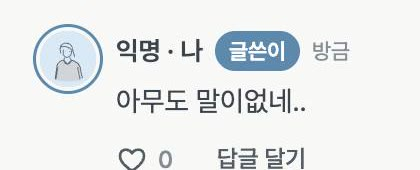
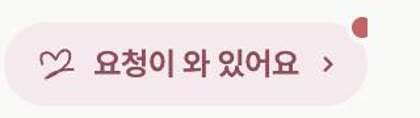
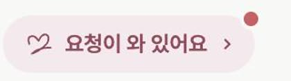
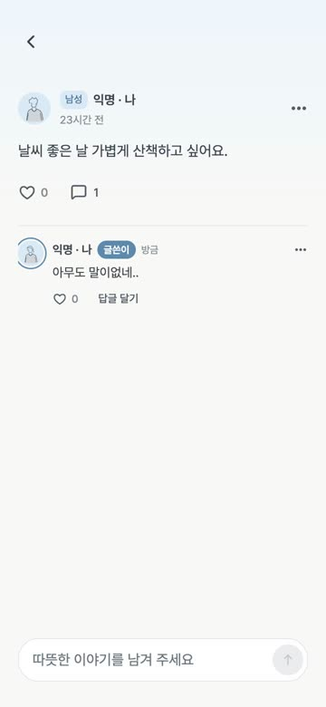
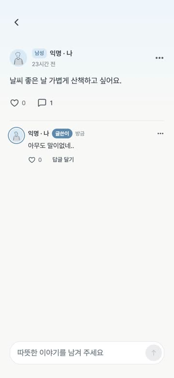
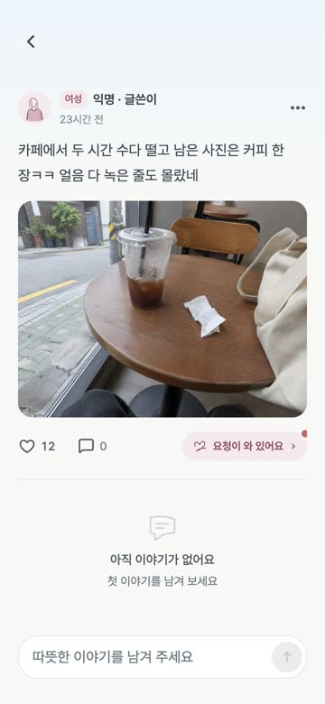
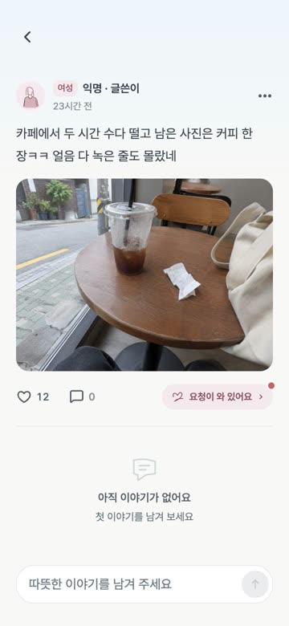

원인 · 안쪽 화면의 스크롤 영역(#features .detail-scroll)이 휴대폰 양끝에서 20px 안쪽에 놓이고, 가로로 넘치는 걸 숨겨요. 내용이 영역 끝에 딱 붙어 있어서 여백선 밖으로 조금 걸치는 장식(글쓴이 얼굴 고리 3.5px, 새 요청 점 2px)이 잘려요.
고치는 법 · 해시태그 화면과 같게, 스크롤 영역은 휴대폰 폭 전체로(left:0; right:0) 넓히고 20px 여백은 안쪽 여백(padding)으로 옮겨요. 내용 자리는 그대로이고, 양옆에 장식이 걸칠 20px이 생겨요.








고치기 전과 후를 같은 높이로 찍어 픽셀을 비교했어요. "같음"은 차이 0, "눈에 안 보임"은 이미지 압축 수준의 차이예요.
| 화면 | 결과 |
|---|---|
| 무료 리프 받기 · 리프 충전 · 친구 초대 · 배지 · 인증 · 교환 요청 · 지인 차단 · 매장 포인트 | 같음 |
| 익명 이야기 · 편지 쓰기 · 받은 편지 · 알림 설정 · 인연 공개 · 취향 설정 · 새로운 소식 · 플레이스 | 눈에 안 보임 |
| 이야기에서 시작한 인연(교환) | 레이아웃은 같음 · 처음 볼 때만 뜨는 새 요청 점이 두 번째 캡처에서 읽음 처리된 차이 |